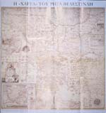
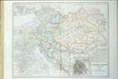
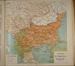
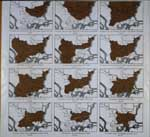
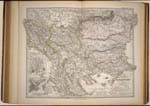
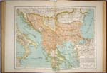
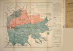
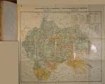
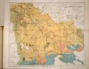
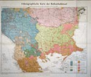

Balkan in kaart
Vijf eeuwen strijd om identiteit
Tentoonstelling van 4 september tot 16 oktober 2003 in de Universiteitsbibliotheek
Samenstelling: Harrie Teunissen en John Steegh
Tentoonstelling
kaarten 1 - 6, 7
- 9, 10 - 19, 20 -
29, 30 - 39, 40
- 47
Tenzij anders vermeld zijn de hier beschreven kaarten en gerelateerde stukken afkomstig uit de ‘Collectie Steegh & Teunissen’, te Leiden. Aan het eind van iedere uitgebreide objectbeschrijving is de naam van de auteur vermeld.
|  | 20. Rigas Velestinlis.
Charta tis Ellados (Kaart van Griekenland). Wenen 1796-97. Verkleinde facsimile, Athene 1998, 66 x 67 cm. (W.2c.14) Rigas Velestinlis (1757-1798) ontwerpt in Wenen de grote uit 12 bladen bestaande wandkaart waarvan hier een sterk verkleinde facsimile wordt getoond. U ziet ook historische locaties, zoals midden aan de rechterrand: Olympia met stadion en hypodroom en |
|
| rechts van het cartouche: Athene met
Acropolis, gymnasion, museon en theater. De inzet linksonder toont
Constantinopel met monumenten uit de Byzantijnse tijd en een gezicht
op Istanbul met haar vele minaretten. De kaart geeft jaartallen van
strijdperken en beeldt vele griekse munten af. Rigas gebruikt
opnieuw oud-griekse namen, zoals Peloponnesos voor de Morea en
Euboia voor Negroponte. Kortom: deze encyclopedische kaart herstelt
de verbinding met het grootse griekse verleden en bevestigt zo zijn
door de Franse Revolutie geïnspireerde programma voor een
neo-byzantijnse republiek met gelijkheid voor alle volkeren,
ongeacht taal en religie, maar wel met grieks als officiële taal.
Een jaar later pakt Oostenrijk Rigas in Triëst op en wordt hij in
het Ottomaanse Belgrado gewurgd. (meer)
|
||
|  | 21. Frijlink, H. en A. van Otterloo, Oostenrijk-Hongarije met Bosnië (met inzetten van Wenen, Praag, Krakau, De Salzkammergoed en de Leitha), getekend door D. Noothoven van Goor, Leiden. Schaal 1 : 3.100.000. 46 x 60 cm. In: Nieuwe Hand-Atlas der Aarde in haren tegenwoordigen toestand door H. Frijlink, 4e druk, herzien door A. van Otterloo, Amsterdam 1881 | |
|
(UB Leiden, coll. Bodel
Nijenhuis atlas 1330)
De kaart toont hoe Nederland kennis maakt met de Dubbelmonarchie na het compromis tussen Oostenrijkers en Hongaren van 1867. Ten opzichte van de vorige druk blijkt de kaart met Bosnië vermeerdert. De kaart vermeldt (in blauw) nog de zogenaamde 'Militaire Grenzen' ten westen van de Donau ofschoon hun militaire functie door de Habsburgse bezetting van Bosnië in 1878 is verdwenen en ze inmiddels opgeheven zijn. Wenen is fraai en scherp getekend, andere inzetten zijn rudimentair en vaag. De Hollandse cartografie heeft haar dominante positie duidelijk verloren ... . (meer)
|
||
|  | 22. Prof. A. Ishirkoff.
Das Gebiet des bulgarischen Exarchat 1870-1912. Uit: W. Greve (Herausg.).
Die Bulgaren in ihren historischen, ethnographischen und politischen
Grenzen mit Vorwort von D. Rizoff, Königlichen Bulgarischen
Gesandten in Berlin, Berlijn 1917. Schaal 1 : 3.700.000. 29,5 x 59
cm. (J.28)
De Ottomaanse regering staat 1870 een Bulgaars Exarchaat toe dat alleen nominaal nog onder het |
|
| patriarchaat van
Constantinopel valt. Voortaan genieten slavisch-orthodoxen
kerkelijke autonomie binnen het Ottomaanse Rijk. Het decreet
bestempelt meerdere steden in het latere Bulgarije tot
bisschopszetel. In Ottomaans Macedonië wordt een referendum
georganiseerd. Daarbij kiezen Skopje, Ohrid en Bitola voor een
bulgaarse bisschop. Het egaal-bruine deel van de kaart geeft de
maximale omvang aan van het exarchaat. Dit gebied ligt ten grondslag
aan 'Groot-Bulgarije' (zie kaart 2). Door de oorlog van 1877-'78 en
de pijnlijke reductie tot 'Klein-Bulgarije' zijn er diocesen waar
geen bulgaarse bisschop heeft gefunctioneerd. Gebieden die daardoor
Grieks-orthodox blijven zijn echter niet op de kaart onderscheiden.
Het patriarchaat wordt weer bevoordeeld en haar positie wordt
sterker, vooral in het achterland van Salonika. Pas in 1890,
Oost-Roemelië hoort inmiddels bij Bulgarije, kunnen bulgaarse
bisschoppen opnieuw zetelen in Ottomaans Macedonië, omdat premier
Stambolov de revolutionaire macedonisch-bulgaarse comités
onderdrukt. Het zuiden blijft in meerderheid Grieks-orthodox; het
wit-bruin gearceerde gebied heeft geen bischoppen van het exarchaat
gekend. (meer)
|
||
|  | 23. Spectrum Publishing
House (ed.). Die Bulgaren in ihren historischen, ethnografischen und politischen Grenzen 679-1917 (Facsimile van de uitgave van Berlijn 1917). Sofia z.j. (ca. 1998). 29 x 31 cm. (N.28) De nationalistische geschiedsopvatting die uit deze verkleinde kaarten spreekt gaat ervan uit dat de lotgevallen van bulgaren alleen interessant zijn als die |
|
| leven in een eigen staat. Het
Eerste Bulgaarse rijk (681-1018), het Tweede Bulgaarse Rijk
(1185-1393) en het tijdvak van de Bulgaarse Wedergeboorte
(1762-1878) dat overgaat in het Bulgarije in de Nieuwe Tijd
(1878-1817) worden gepresenteerd als tijdvakken van grote bloei.
Daartussen liggen periodes van onderdrukking door vreemde machten
met stagnatie en cultureel verval: het Byzantijnse 'juk' (1018-1185)
en vooral het Ottomaanse 'juk' (1393-1878). Die worden dan ook
stiefmoederlijk behandeld, behalve als ze door 'bulgaren' bestreden
worden. Een ander vooroordeel is dat men uitgaat van een homogene
identiteit van een bulgaars volk door de eeuwen heen. Maar het
eerste rijk ontstaat uit de samenkomst van een turkse heersende
kaste met de massa van slavisch sprekende boeren, het tweede rijk
uit een opstand van een bulgaars-koemaanse clan, gesteund door
romaanssprekende herders en bulgaarse boeren. Het nieuwe Bulgarije
van deze kaartjes negeert dergelijke 'vreemde' periodes, groepen en
invloeden. Hier wordt met terugwerkende kracht een zuivere
identiteit van het 'grote bulgaarse volk' geponeerd. (meer)
|
||
|  |  | 24. Die Balkan-Halbinsel im Maasstabe von 1 : 2.500.000. No. 56. Uit: Stieler's Hand-Atlas (über alle Theile der Erde und über das Weltgebaüde), Gotha 1881. 40 x 56,5 cm. (D.4) |
|
25. Rumeli-yi şāhāne ... (Roemelië des Sultans ...). Schaal 1 : 3.500.000. Uit: Ottomaanse Wereldatlas. Istanboel 1314 (1899). 37,5 x 54 cm. (D.19) Beide atlaskaarten geven een beeld van vrijwel hetzelfde gebied tussen de Ottomaans-Russische oorlog van 1877-'78 en de Balkanoorlogen van 1912-'13. Het is geen toeval dat Griekenland bij de Ottomanen wel en bij de Duitsers niet wordt getoond. Belangrijker is echter het verschil in de gebieden die tot het Europese deel van het Ottomaanse Rijk (Roemelië) gerekend worden. De Ottomanen erkennen de onafhankelijkheid van Roemenië, Montenegro en Servië, maar niet die van Bulgarije. De Duitse kaart lijkt de eenheid van Walachije en Moldavië nog niet helemaal te erkennen en suggereert anderzijds dat Bulgarije al onafhankelijk is, ofschoon de nominale soevereiniteit van de Porte over dat land pas in 1908 door de Bulgaren verworpen wordt. Oost-Roemelië (vreemd genoeg niet als zodanig aangeduid, het betreft het noordelijk deel van Thracië) heeft voor de Duitsers nog een aparte status waar dit gebied op de latere Ottomaanse kaart nog een eigen provincie is. En dat terwijl het in 1885 door Bulgarije geannexeerd is! Daarentegen is de Duitse kaart juist veel 'voorzichtiger' met de positie van Bosnië-Herzegovina dat 1878 door Oostenrijk-Hongarije is bezet. (meer)
|
||
|  | 26. Cleanthes Nicolaides: Völker- und Sprachenkarte von Macedonien. Schaal 1 : 1.000.000. Uit: Macedonien; die geschichtliche Entwicklung der macedonischen Frage im Altertum, im Mittelalter und in der neueren Zeit. Berlijn 1899. 40,5 x 65,5 cm. (UB Leiden 149 D 27) | |
| Professor Nicolaides gaat uit
van de continue historische rol van grieken in Macedonië en vult
die aan met actuele etnografische gegevens. In zijn visie veranderen
de Bulgaarse en Servische veroveringen van Macedonië haar
hellenistisch karakter niet. Integendeel, de slavische rijken worden
qua cultuur en religie gehelleniseerd. Nicolaides toont dat het
grieks nog steeds vrij algemeen in Zuid-Macedonië gesproken wordt
en dat een groot deel van de zogenaamde slaven aldaar bulgaarstalige
grieken zijn die cultureel deel uitmaken van de hellenistische
wereld. Het gebied dat Nicolaides claimt als grieks is vrijwel
identiek aan het territoir dat dertien jaar later door Griekenland
bezet wordt in de Eerste Balkanoorlog. Deze volkeren en talenkaart
van het nog Ottomaanse Macedonië legitimeert dus bij voorbaat de
hellenistische expansie. Tegelijk wil ze hiervoor Servische steun
verwerven door hun aanspraken op Oud-Servië en Noord-Macedonië te
erkennen en door Bulgaarse claims te beperken tot Noordoost Macedonië.
(meer)
|
||
|  | 27. Vasil Kánčov.
Etnograficeska karta na Makedonija. Carte ethnographique de la Macédoine. Schaal 1 : 750.000. Uit: Makedonija: etnografija i statistika. Sofia 1900. 53,5 x 73 cm. (incl. boek) (UB Leiden 964 E 29) Deze etnografische kaart van Kánčov, inspecteur voor |
|
| het officiële Bulgaarse
beeld van dit gebied. De overweldigende meerderheid van haar
slavische bevolking stuurt haar kinderen in 1896-'97 naar scholen
van het bulgaars Exarchaat: er zijn 843 bulgaarse tegen 77 servische
scholen. Omdat Kánčov vooral aandacht schenkt aan taalcriteria
kan hij de pomakken in Macedonië als islamitische bulgaren laten
gelden. Opvallend is het ontbreken van serviërs; alle slavisch
sprekenden op deze kaart zijn bulgaren, met uitzondering van de
russische monniken op Athos. Het servische Kačanik-district
rekent hij wijselijk niet tot Macedonië zoals hij ook enkele
evident griekse districten in het zuiden niet tot Macedonië rekent.
Daartegenover geeft Kánčov de albanezen in Noord- en
West-Macedonië gedetailleerd weer; hij kent geen albanezen van
servische komaf en christenen en moslims horen tot één albanese
groep. Tegenover de Grieks-Servische dreiging lijkt hier een
Bulgaars-Albanese verstandhouding te ontstaan. (meer)
|
||
|  | 28. Gopčević,
Spiridon. Ethnographische Karte von Makedonien und Alt-Serbien. Uit:
Petermanns Mittheilungen 35, 1889. Schaal 1 : 750.000,
46 x 57 cm. (UB Leiden V 138:35)
Met deze kaart en de begeleidende tekst Die ethnographischen Verhältnisse Makedoniens und Altserbiens ondersteunt Gopčević het nieuwe |
|
| geopolitieke idee dat vrijwel
heel Kosovo en een groot deel van Macedonië door serviërs wordt
bewoond. Niet alleen orthodoxen en islamieten die servisch spreken,
maar ook christelijke albanezen van servische afkomst en
moslim-albanezen van servische komaf worden door hem tot de serviërs
gerekend. Bovendien 'ontdekt' Gopčević dat ook de
overgrote meerderheid van de slavische bevolking in Macedonië
eerder servisch dan bulgaars is. Deze claim wordt taalkundig
onderbouwd, door te wijzen op hun folklore en met bewijzen uit de
geschiedenis van deze regio. Deze sensationele kaart uit 1889 vormt
het 'wetenschappelijke' fundament voor een generatie die zich sterk
maakt voor Servië's expansie in Ottomaans gebied langs de as
Skopje-Salonika, ten koste van Griekse en Bulgaarse aanspraken.
(meer)
|
||
|  | 29. Jovan Cvijić.
Ethnographische Karte der Balkanhalbinsel. Uit: Petermanns
Mittheilungen 59, 1913. Schaal 1 : 1.500.000. 60,5 x 74 cm.
(W.2c.9)
Deze fraaie etnografische kaart verschijnt nog vóór het verdrag van Boekarest (augustus 1913) nieuwe grenzen trekt na afloop van de Tweede Balkanoorlog. Professor Cvijić, hoofd van de faculteit der geografie |
|
| van de Universiteit van
Belgrado, onderscheidt zeven belangrijke groepen: turken, grieken,
vlachen, serbo-kroaten, bulgaren, macedo-slaven en albanezen. Over
joden en zigeuners, die qua aantallen toch niet onder doen voor de
vlachen, zwijgt de kaart. De serbo-kroaten verdeelt hij over vijf
categorieën: orthodoxen, katholieken, moslims, gealbaniseerde serviërs
(arnauten) en orthodoxe serviërs die albanees spreken (vgl. kaart
28); deze categorie maakt het mogelijk om half 'Oud-Servië' en half
Noord-Albanië als zijnde serbo-kroatisch in te kleuren. Ook in
Macedonië zouden serbo-kroaten volgens Cvijić een groot gebied
bewonen dat zich naar het zuiden uitstrekt tot het meer van Ohrid en
tot Perlepe (Prilep). Cvijić legitimeert met deze kaart dus de
Servische expansie in Ottomaans gebied ten koste van de albanezen.
Tot de macedo-slaven horen zowel orthodoxen als moslims. Cvijić
verdedigt deze typering onder meer door er op te wijzen dat in
taalkundig onderzoek vast is komen te staan dat het macedo-slavische
dialect een overgangspositie inneemt tussen servisch en bulgaars.
Deze groep legt ook geen uitgesproken nationaal bewustzijn aan de
dag. Als ze zichzelf al servisch of bulgaars noemen is die
identiteit iets oppervlakkigs, want sterk afhankelijk van de actuele
propaganda door kerk en school. Op het laatste moment wordt het
merendeel van die neutrale macedo-slavische zone toch door Cvijić
geclaimd. Let maar op de rode stippellijn die de grens aangeeft van
het gebied waar servische taalkenmerken, volksliederen en
traditionele feesten zouden domineren. Dit correspondeert met de
actuele geopolitieke situatie waar Macedonië inmiddels grotendeels
door Servië bezet is, terwijl de Bulgaren in Thracië staan. (meer)
|
||
| vorige pagina | volgende pagina |